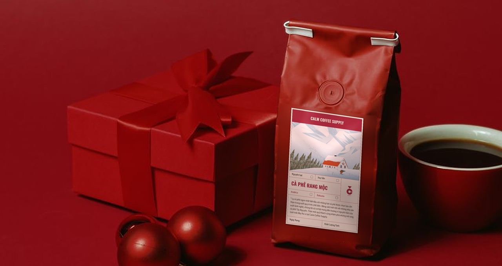

Xuân · Spring
Jasmine · Honey · Orange
Clean, bright and floral. Great as pour-over or cold brew.
From 120,000₫Contact
Free delivery on orders from 500,000₫ · Cam Ranh shop open 8:00–20:00 every day
Pure roast · No additives · Central Highlands
The best cup starts with carefully chosen beans. We work with skilled producers to bring you the true flavor of Central Highlands coffee: pure Vietnamese coffee beans with no butter or flavorings, great in a phin filter or an espresso machine. Visit our shop in Cam Ranh, Khánh Hòa, or order for delivery.

Our Coffee
Each coffee wears a season on its bag and has its own roast. Pick Arabica, Robusta or your own blend ratio, then choose whole bean or ground and your bag size.
Jasmine · Honey · Orange
Clean, bright and floral. Great as pour-over or cold brew.

Caramel · Milk chocolate · Chestnut
Balanced, gently sweet and easy to drink every day. Good in a phin or an espresso machine.

Cacao · Palm sugar · Cinnamon
Warm, round and sweet on the finish. Lovely with milk.

Dark chocolate · Roasted nuts · Bold
Strong, heavy and bold. The classic choice for phin coffee and iced milk coffee.
From farm to cup
Beans are carefully chosen throughout processing, from skilled producers in the Central Highlands.
We roast every batch ourselves in Cam Ranh, on its own, with no butter, sugar or flavorings, to keep the bean's true flavor.
The roast date is written on every bag, so you always know how fresh your coffee is.
Questions
It is coffee roasted on its own, without butter, sugar, rice wine or flavorings, which many traditional Vietnamese roasts add. All the flavor comes from the beans and the roast, so you taste the true character of Central Highlands coffee. Read more about pure-roast coffee.
Phin coffee is best with plenty of Robusta and a darker roast, such as Đông or Thu, as 100% Robusta or with 20–30% Arabica for extra aroma. If you buy ground coffee, choose a phin grind (medium, slightly coarse) so it isn't harsh and doesn't clog the filter. See the step-by-step phin guide.
Whole bean stays fresh longer. If you don't own a grinder, choose ground and tell us whether you brew with a phin filter, an espresso machine or pour-over.
Use it within 60 days of opening. Keep it somewhere cool and dry, seal the bag tightly so no air gets in, and keep it out of direct sunlight.
12 months from the production date. The roast date is written on every bag.
Yes. For every coffee you can pick 100% Arabica, 100% Robusta, or a blend of both with 10% to 90% Arabica, in steps of 10%. The price changes with the ratio you choose.
Call or email us with the coffee, bean ratio, grind and bag size you'd like. Delivery is free on orders from 500,000₫; smaller orders have a 30,000₫ delivery fee. We'll call you back to confirm.
Arabica is brighter, with complex floral and fruity aromas. Robusta is bolder and more bitter, with more caffeine, and is perfect for phin coffee or Vietnamese iced milk coffee.
Contact
Choose your coffee above, then call or email us to order.
25 Điện Biên Phủ, Cam Ranh, Khánh Hòa 654467, Vietnam
Open daily, 8:00–20:00
Sign up to hear when a fresh roast is ready, plus guides to brewing great coffee at home.